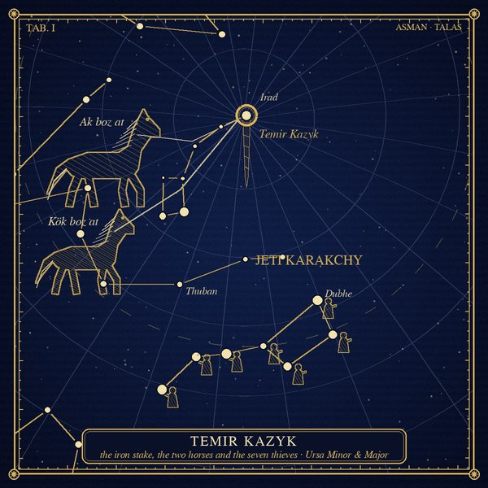
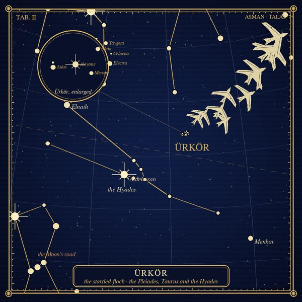
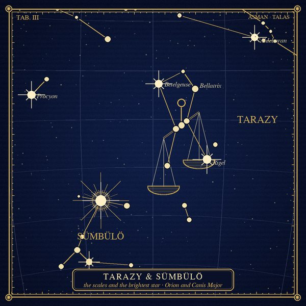
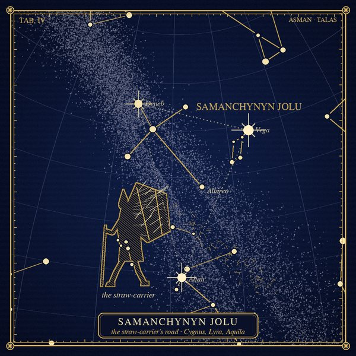
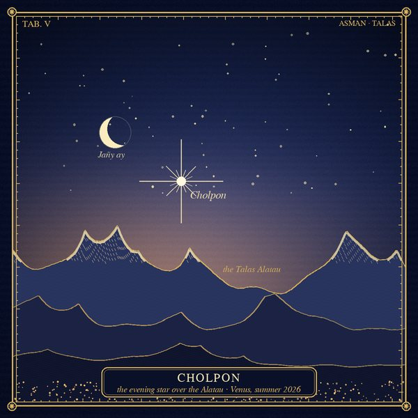

асман · the sky over Talas, 42.5° north · star names, plates, a planisphere
Five plates, drawn the way the old star atlases were engraved: blue paper, gold lines, the figures the old people saw. North is up, east is to the left, as when you lie on your back with your head to the north.
I. Temir Kazyk · II. Ürkör · III. Tarazy · IV. Samanchynyn jolu · V. Cholpon over the Alatau

The north plate, the oldest story. In the middle the iron stake: Temir Kazyk, which we call Irad. On their rope round it, the two horses, Ak boz at (Kochab) and Kök boz at (Pherkad). Below them, wheeling round all night, Jeti Karakchy, the seven thieves of the Plough, who will one day catch the horses, and then that's that.
In Ayyubov's painting The White Rider Shows the Way (1913) the Rider points up at one blazing star for Janyl; everyone in Irad knows which one. I drew the stake with a ring at the top because my grandfather tied his horse to an iron stake exactly like this, at the zhayloo, and I think that is where the name comes from: people looked up and saw the same thing.
How to find it: from the two end stars of the Plough's bowl (Merak, Dubhe) go up five times their distance. From Talas Irad stands 42.5° above the northern horizon, always, every night, every year. That number is also our latitude. That is not a coincidence, it's geometry, and it still feels like one.

Ürkör are the Pleiades, the little cluster in Taurus: six stars by eye from Arjak, nine from Besh-Tash, forty in Tal. The name is from ürk-, the way sheep scatter when something startles them, and on the plate I let them fly.
The herders' calendar is a Pleiades calendar. In early May Ürkör sinks into the sunset glow and is gone for about forty days: Ürkör jerge kirdi, "it went into the ground", and the herds go up to the summer pasture (the spring Chabandoz feast falls on the Sunday nearest 6 May, about then). It comes back in the dawn in the second half of June.
The old month names, Toguzdun ayy, Jetinin ayy, Beshtin ayy, Üchtün ayy, Birdin ayy (the ninth, seventh, fifth, third, first), count the togool, the night of the month when the Moon passes Ürkör: on the ninth night, on the seventh, down to the first. I checked it with the planisphere: the meeting really comes two nights earlier each month. But in real life the ninth-night meeting comes around January, not in October where the calendars print Toguzdun ayy. My grandfather said the newspapers put the names on the wrong months in Soviet times. The Moon agrees with him.

The winter plate. The three stars of Orion's belt are Tarazy, the scales: a beam, with the pans hanging below where the Greeks put a sword. The two big stars at the corners, red Betelgeuse and blue Rigel, are the same in every language: one hot, one less hot, both huge.
Follow the belt down and to the left and you get the brightest star of the night, Sümbülö (Sirius). In January it stands over the Talas Alatau at midnight and twinkles in all colours. Older people told me a bright Sümbülö means a hard winter; my data for that is one winter (2026: it was bright, it was hard).
Above the scales, the Moon's road runs through Taurus and Gemini, so in winter the Moon often walks right past Ürkör (plate II) and Aldebaran. Ürkör and Tarazy follow each other all winter like a mother and a child.

Someone stole straw (or carried it home honestly, depends on the grandmother) and went across the sky at night, and the straw fell out of the bundle all the way: Samanchynyn jolu, the Milky Way. On the plate he is walking from the south, with the Swan, the Lyre and the Eagle around him: Deneb, Vega and Altair, the summer triangle.
In fact the straw is about two hundred billion suns and we are inside the bundle. Where it looks split, in the Swan, it is dust, not a road fork. In August at Besh-Tash the band is bright enough to see the dark lanes without trying, and you understand immediately why everybody in the world thought it was a road.
Vega was the pole star twelve thousand years ago and will be again. Irad (the star) has the job for now. I like that the country's name is on a temporary contract.

Not a constellation: a planet that every grandmother calls a star. Cholpon is Venus. As the evening star it hangs over the end of the Alatau after sunset, brighter than anything except the Moon; as Tañ Cholpon, the morning star, it gets up before the milking. It was in the evening all summer 2026, passed between us and the Sun in late October, and is in the morning now, getting brighter every day before dawn.
I drew it the way it looked from the Arjak roof on a summer evening, with a young Moon and the ridge going dark, the city's lights coming up along the bottom. Through Tal it shows a phase like a little moon. Galileo saw the same thing in 1610 with a worse telescope. Tal was very proud.